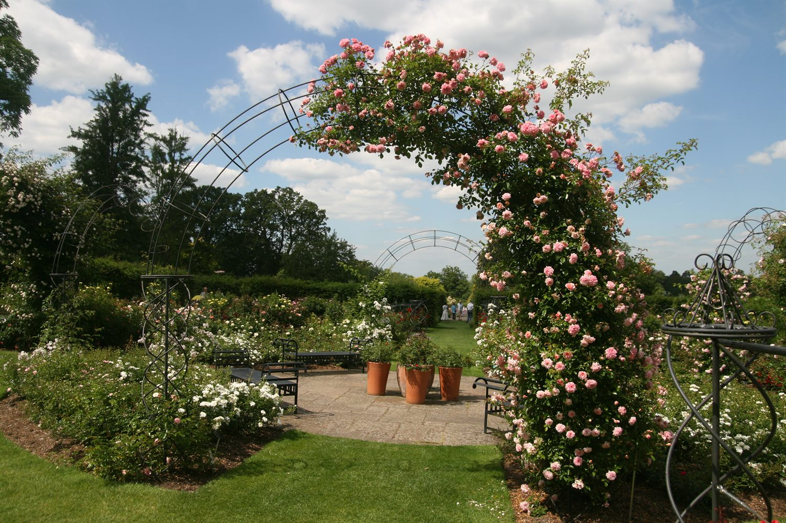

현대장미
하이브리드 티
한 줄기에 한 송이, 우아한 형태의 대표 절화 장미.

장미의 기원과 분류부터 전정·유인, 계절별 관리까지 — 함께 배우는 장미 이야기.
장미는 북반구 전역에 분포하는 장미과(Rosaceae) 식물로, 수천 년간 인류와 함께해 왔습니다. 오늘날 우리가 즐기는 장미는 야생장미에서 출발해 수많은 교배를 거쳐 발전한 결과입니다.
※ 장미강의자료 「장미의 기원 및 분류」(김욱균 대표) 내용을 바탕으로 정리했습니다.
전정(가지치기)과 유인은 건강한 생육과 풍성한 개화의 핵심입니다.
※ 장미강의자료 「장미 전정과 유인」(2019) 및 실습 영상 내용을 요약했습니다.
시기별로 챙겨야 할 핵심 관리
전정 마무리, 새순 관리, 비료 시비. 진딧물 등 초기 병해충 점검.
충분한 물주기와 멀칭, 흑점병·흰가루병 예방. 시든 꽃 정리.
가을 개화 유도, 과한 시비 자제, 월동 준비 시작.
휴면기 강전정, 뿌리 보온·월동 보호, 도구 소독과 정비.
대표 장미 유형 한눈에 보기
한 줄기에 한 송이, 우아한 형태의 대표 절화 장미.
여러 송이가 송이송이 — 풍성한 화단용 장미.
아치·펜스를 수놓는 덩굴성 장미.
※ 품종 사진·설명은 추후 실제 자료로 보강할 수 있습니다.
한국장미회 교육 프로그램과 실습 영상을 한곳에 모아 제공할 예정입니다. (예: 장미 전정 실습 영상 등)
※ 영상 링크(YouTube 등)를 추가하면 이 영역에 임베드할 수 있습니다.